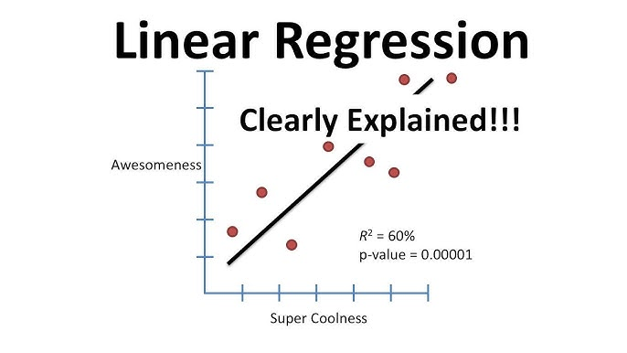
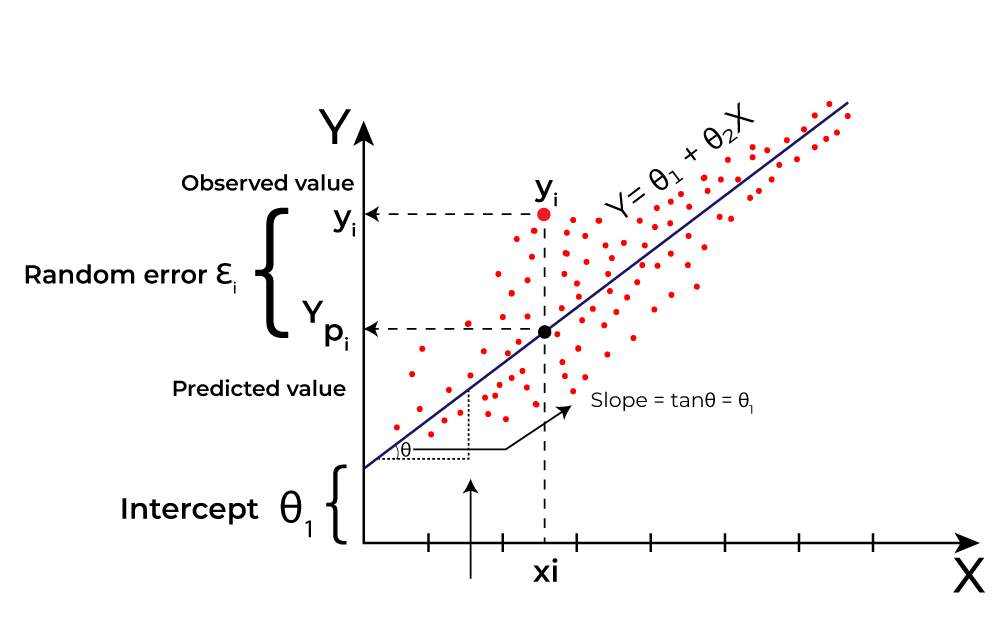
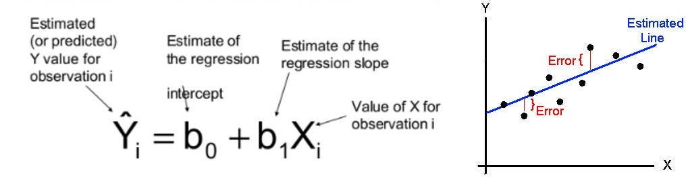

Regression problems are a cornerstone of machine learning and statistics,
focusing on predicting continuous numerical values rather than discrete
categories. Unlike classification problems that predict labels like 'spam'
or 'not spam', regression models forecast real-valued outcomes such as
prices, temperatures, or quantities.
Key Characteristics of Regression Problems:
• Continuous Output: Target variables are real numbers (e.g.,
45.67, 1000.50) • Supervised Learning: Requires labeled training
data with input-output pairs • Pattern Recognition: Learns
relationships between independent variables (features) and dependent
variables (targets) • Error Minimization: Models aim to minimize
the difference between predicted and actual values
Real-World Examples: • Financial Forecasting: Predicting
stock prices or sales revenue • Weather Prediction: Forecasting
temperature or rainfall amounts • Healthcare: Estimating patient
recovery time or drug dosage • Real Estate: Valuing property prices
based on features • Marketing:
Predicting customer lifetime value or conversion rates

Real-value predictions in regression involve finding the best mathematical relationship between input features and the target variable. The process typically includes:
Machine learning offers various regression algorithms, each suited for different types of data and relationships:
Linear Regression is the most fundamental and widely used regression
algorithm in machine learning and statistics. It establishes a linear
relationship between the dependent variable (target) and one or more
independent variables (features).
Definition: Linear Regression predicts the target variable as a
linear combination of input features, assuming a straight-line
relationship between variables.
Key Assumptions: • Linearity: Relationship between features
and target is linear • Independence: Observations are independent
of each other • Homoscedasticity: Constant variance of errors
across all levels • No Multicollinearity: Features are not highly
correlated • Normality: Residuals follow normal distribution
Working Principle:
The mathematics of linear regression involves finding the best-fit line
through data points by minimizing the error.
The Linear Regression Equation:
Y = \beta_0 + \beta_1X_1 + \beta_2X_2 + \dots + \beta_nX_n + \epsilon
Where: • Y: Dependent variable (target to predict)
• X₁, X₂, ..., Xₙ: Independent variables (features)
• β₀: Intercept (bias term) • β₁, β₂, ..., βₙ: Coefficients
(weights for each feature) • ε: Error term (residual)
Cost Function - Mean Squared Error (MSE):
MSE = \frac{1}{n} \sum_{i=1}^{n} (y_i - \hat{y}_i)^2 Gradient Descent
Optimization: • Iteratively update parameters to minimize cost
function • Learning rate controls step size in parameter updates •
Convergence when cost function stops decreasing significantly

Let's apply linear regression to predict house prices based on features
like size, bedrooms, and location.
Dataset Example: | Size (sq ft) | Bedrooms | Location Score | Price
($) |-------------|----------|----------------|-----------| | 1500 | 3 | 8
| 250000 | | 2000 | 4 | 9 | 350000 | | 1200 | 2 | 7 | 180000 | | 1800 | 3
| 8 | 280000 |
Model Training: • Features: Size, Bedrooms, Location Score •
Target: Price • Algorithm: Multiple Linear Regression
Prediction Equation:
Price = -50000 + 120 \times Size + 15000 \times Bedrooms + 20000 \times
LocationScore Implementation Code (Python with scikit-learn):
import pandas as pd
from sklearn.linear_model import LinearRegression
from sklearn.model_selection import train_test_split
from sklearn.metrics import mean_squared_error
# Load data
data = pd.read_csv('house_prices.csv')
X = data[['size', 'bedrooms', 'location_score']]
y = data['price']
# Split data
X_train, X_test, y_train, y_test = train_test_split(X, y, test_size=0.2, random_state=42)
# Train model
model = LinearRegression()
model.fit(X_train, y_train)
# Make predictions
predictions = model.predict(X_test)
# Evaluate
mse = mean_squared_error(y_test, predictions)
print(f'Mean Squared Error: {mse}')
For a full hands-on experience with linear regression, including data preprocessing, model training, evaluation, and visualization, check out the complete code repository:
https://github.com/zeeshanali90233/MachineLearning---DeepLearning/tree/main/04-Linear-Regression
Advantages: • Simplicity: Easy to understand and implement
• Interpretability: Clear relationship between features and target
• Speed: Fast training and prediction
• No Tuning Required: Few hyperparameters to adjust
• Foundation: Basis for more complex algorithms
Disadvantages: • Linearity Assumption: Can't capture
non-linear relationships • Outlier Sensitivity: Affected by
outliers in data • Multicollinearity: Problems when features are
highly correlated • Underfitting: May be too simple for complex
datasets • Feature Scaling: Requires proper scaling for optimal
performance
Regression Problems involve predicting continuous numerical values
using machine learning • Linear Regression assumes linear
relationships and is the foundation of predictive modeling
• Mathematics includes cost functions, gradient descent, and
statistical assumptions • Practical Applications span finance,
healthcare, real estate, and many other domains • Implementation is
straightforward with libraries like scikit-learn • Evaluation uses metrics
like MSE, MAE, and R2 score
Mastering regression problems and linear regression opens doors to
advanced machine learning techniques and real-world problem-solving!
Books: "An Introduction to Statistical Learning" by James et al.
• Online Courses: Coursera's Machine Learning by Andrew Ng
• Documentation: Scikit-learn Linear Regression docs
• Practice: Kaggle regression competitions
• Advanced Topics: Regularization techniques (Ridge, Lasso)
About the Author: Zeeshan Ali is a machine learning engineer
specializing in predictive modeling and data science. Connect on
LinkedIn
for more ML insights.